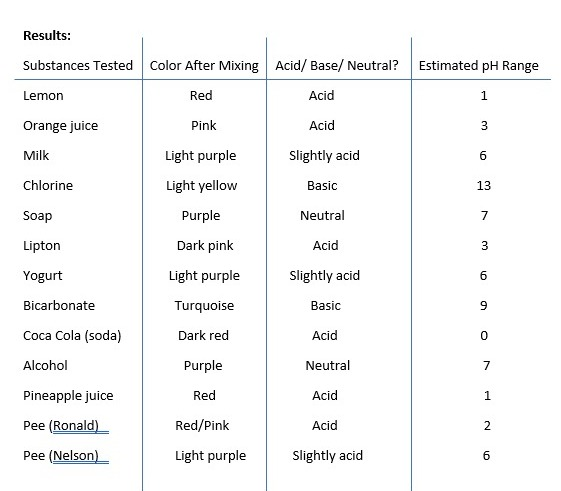

| Start | Introduction and Hypothesis | Materials and Procedure | Results and Conclusions |
|---|

In this experiment, we clearly saw how red cabbage juice changes color when mixed with different substances,
depending on their pH. Very acidic substances such as lemon juice, orange juice, Lipton tea, Coca-Cola and Ronald's
urine turn the juice red or pink, indicating a low pH (0-3). Slightly acidic substances such as milk, yogurt and
Nelson's urine color the juice light purple, indicating a pH close to 6. Alkaline substances such as chlorine and
baking soda, on the other hand, colored it yellow and turquoise, indicating a high pH value (9-13). Substances such
as soap and alcohol remained purple, which means they are neutral and have a pH of around 7. This experiment has
shown that red cabbage juice is a good natural way to determine whether something is acidic, neutral or basic by
simply looking at the color it takes on.